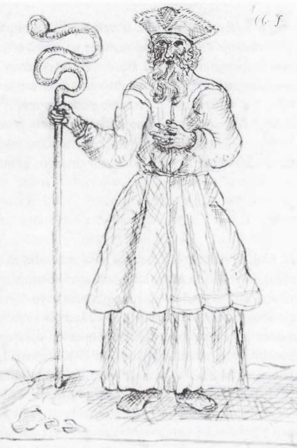

Pagan clergy (Krivis, žyniai, vaidilutės)¶
Overview¶
[Historical record] Little is certain. Długosz describes the Vilnius sacred fire, grove and snakes destroyed in Feb-Mar 1387. Peter of Dusburg describes a Prussian high priest, the Criwe at Romuva. Whether Lithuania had a single Krivis is debated; the title Krivių Krivaitis is mostly 16th-century and later. Lizdeika, Gediminas’s dream-reader, is a chronicle legend. Žynys and vaidilutė survive as folk terms, and the Palanga amber-priestess is shaped by 19th-century Romanticism.
Pagan clergy (Krivis, žyniai, vaidilutės)

Pagan clergy (Krivis, žyniai, vaidilutės) · faction — Image: Matthäus Prätorius, Public domain via Wikimedia Commons¶

Tipas |
grupuotė |
Pastaba |
Krivis, žyniai, and vaidilutės: keepers of sacred groves, altars, and ancient rites. |
Wants (by book)¶
Book |
Goal |
Leverage |
Red line |
|---|---|---|---|
VI |
Bind the brothers to the gods (the Pact, 1345; VI ch. 3) |
Oath ceremonies |
Kin-blood |
I |
Keep the flames and the Pact; punish kin-killing |
Extinguishing a flame (Feb 1387; I ch. 29) |
|
II-III |
Hold the Hidden Groves |
Galminas’s bog bridge (III ch. 19); the Medvėgalis žynys (III ch. 17) |
Felled groves |
IV |
Survive the baptism |
Quiet žyniai in the villages |
Constance’s missionaries |
V |
Pass the words on |
The beekeeper-žynys gives them away in 1433 (V ch. 11); dies Sep 1448 (V ch. 27) |
The Pact sung wrong |
Patron Force¶
[The saga’s invention] The gods themselves, the Pact’s human party (Tylioji Sutartis). The clergy are brokers, not servants: some honest, some frightened. Raganos stand outside the Pact.
Internal tensions¶
The Krivis of 1345-82 hid the Pact’s blood price. Lot-casters read what the paymaster wants. After 1387 the clergy scatter: the žyniai into villages as healers, the vaidilutės baptised and married off, and the Krivis walks into the felled grove. The saga holds that Galminas is the last of the old žyniai in 1409-10; the „last žynys“ of Book V is his pupil, and five singers remain after 1448 (V ch. 27).
Notable members¶
Ryšiai
Bound by: Tylioji Sutartis (Silent Pact)
Members: Eglė (vaidilutė → Pelkių Eglė) (…–1382) · Krivis of Šventaragis
Sąsajos¶
graph LR
egle["Eglė (vaidilutė → Pelkių Eglė)"]
krivis["Krivis of Šventaragis"]
pagan_clergy["Pagan clergy (Krivis, žyniai, vaidilutės)"]
silent_pact["Tylioji Sutartis (Silent Pact)"]
krivis -->|Member of| pagan_clergy
egle -->|Member of| pagan_clergy
silent_pact -->|Binds| pagan_clergy
style pagan_clergy stroke-width:3px